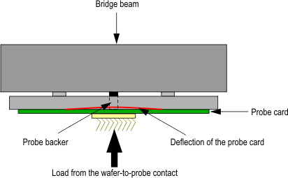

Direct-Probe probe backer
This section describes the concept of the Direct-Probe probe backer using design examples and how to measure and adjust its height and planarity.
The purpose of a probe backer is to transfer the resultant load from the wafer-to-probe contact into the mechanical structure of the prober head-plate. Usage of the probe-backer can significantly reduce the amount of localized deflection of the probe head assembly.
Note You have to minimize the deflection to ensure that all pins contact
similar at all contact points.

General specifications
- No contact between bridge beam and test head
Design recommendations
Depending on the environment Advantest recommends the following design.
- Stiffener inlay:
Use this design when excessive warpage of the PCB is of concern
- Floating probe backer:
Use this design when component placement in the central area is restricted
Functional changes
- Introduced in SmarTest 6.5.4